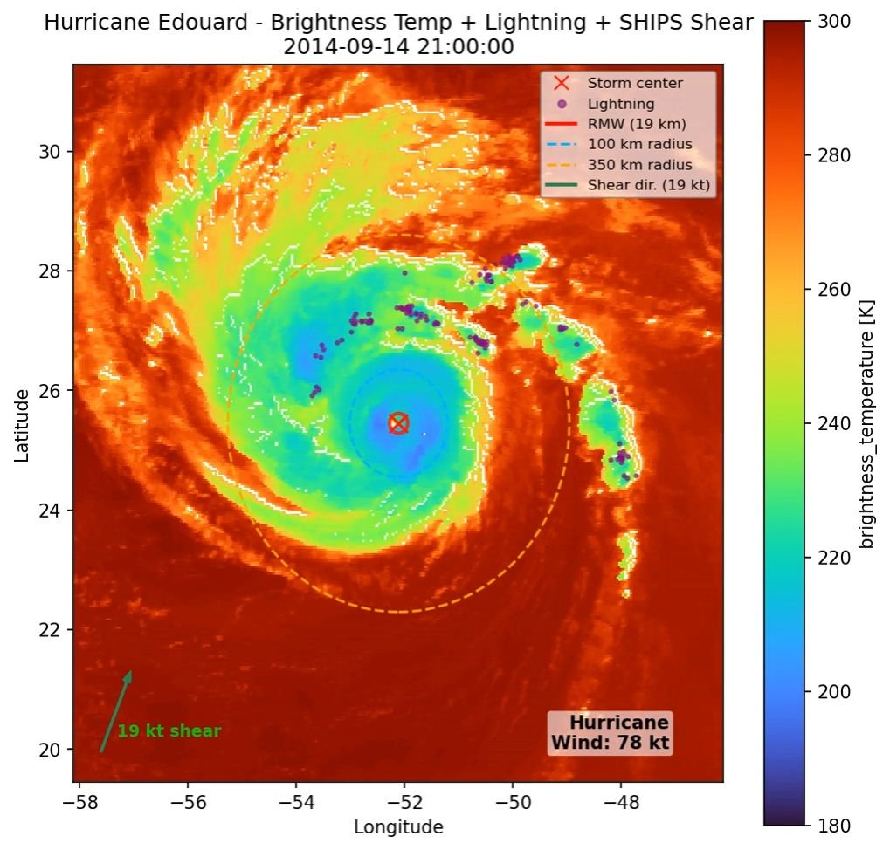
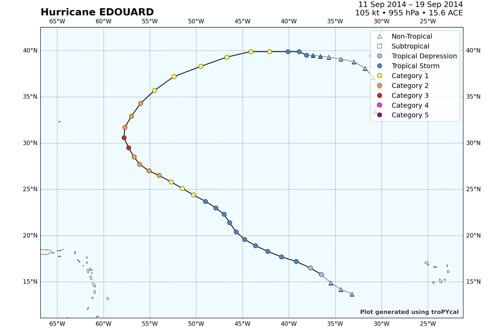
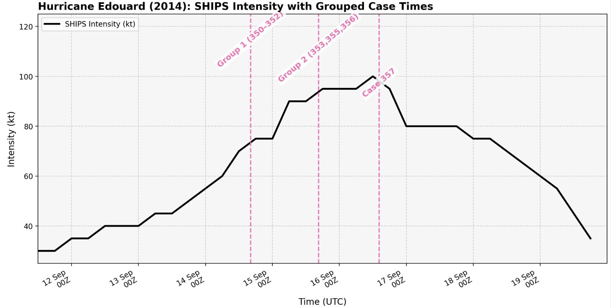
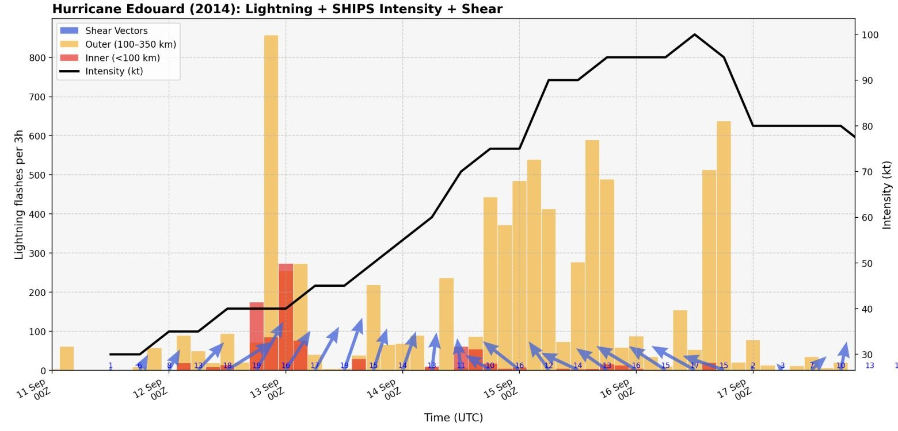
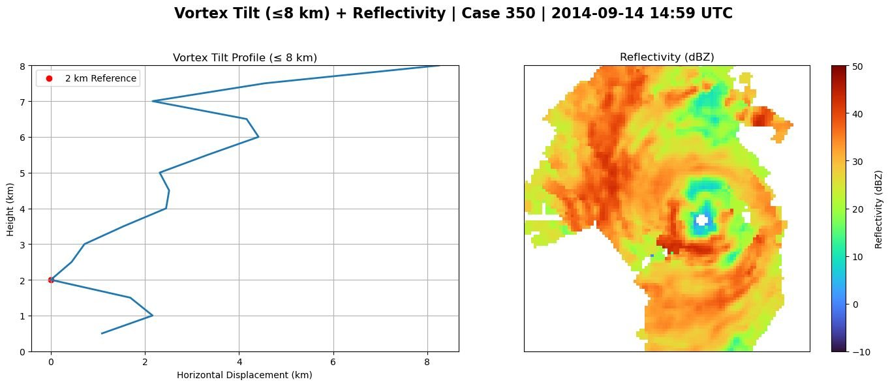
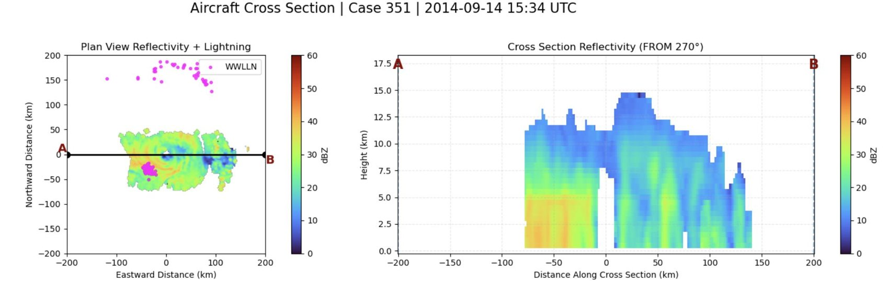
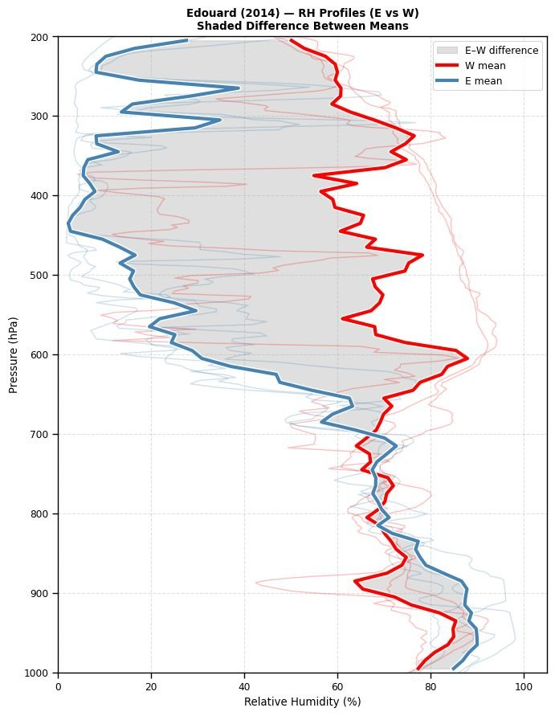
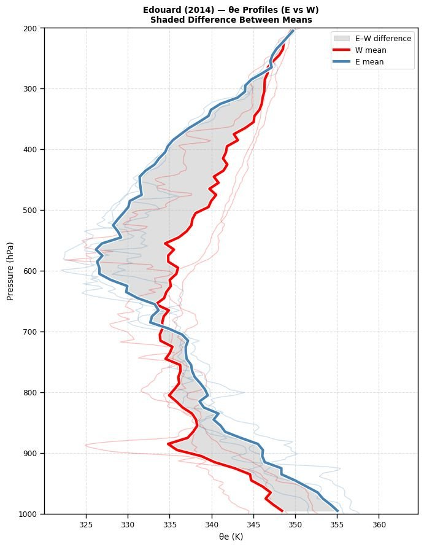
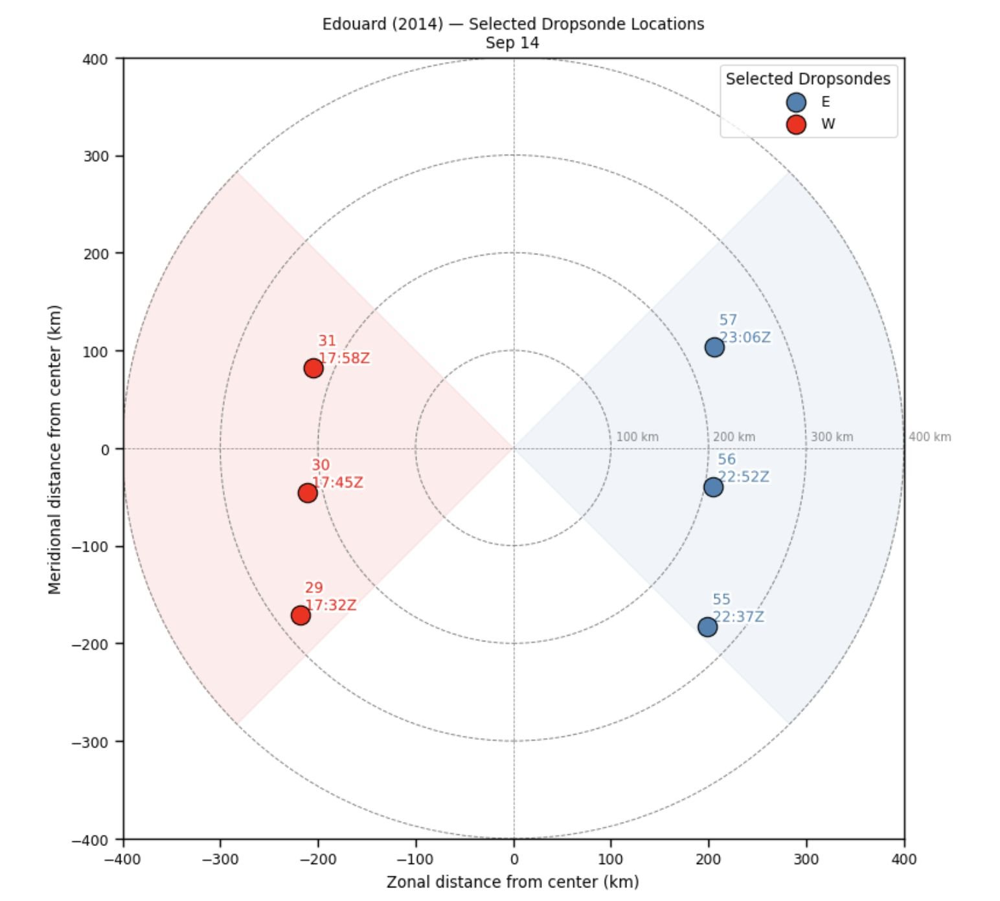
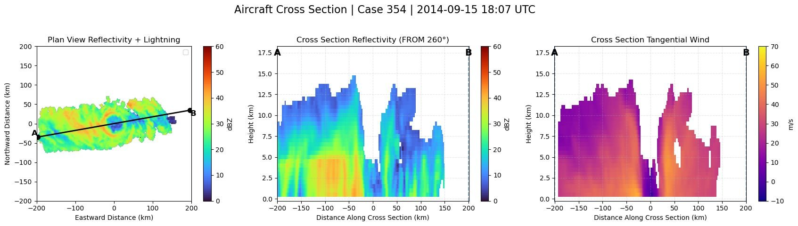

Undergraduate Honors Thesis · University at Albany · Advisors: Prof. Kristen Corbosiero & Prof. Brian Tang
Environmental and Structural Drivers of Hurricane Edouard (2014) Intensification
What helped Hurricane Edouard strengthen, and what held it back? Aircraft radar, dropsondes, satellite imagery and lightning observations tell the story of a well-observed storm.

Why Hurricane Edouard?
Edouard (11–19 September 2014) became a major hurricane over the open Atlantic, peaking at 105 kt. It was also one of the best-observed storms of its era:
- NOAA P-3 Hurricane Hunter aircraft, including tail Doppler radar
- NASA's Hurricane and Severe Storm Sentinel (HS3) Global Hawk
- NCAR/NOAA Airborne Vertical Atmospheric Profiling System (AVAPS) dropsondes
- Satellite infrared imagery
- World Wide Lightning Location Network (WWLLN) lightning data
The goal was to bring these observations together to examine what supported, and what hindered, Edouard's intensification.

Approach
P-3 tail Doppler radar passes were grouped into “cases” with similar swath paths, and the analysis focused on two groups during intensification. For each, radar reflectivity, vortex tilt and tangential winds were combined with dropsonde profiles, infrared imagery and lightning.

Lightning came before intensification
A lightning outbreak late on 12 September into early 13 September came before Edouard's main intensification, a lead–lag relationship. In most time periods, the outer core (100–350 km) produced more flashes per 3 hours than the inner core.

A small-tilt, organized vortex
In Group 1 (14 September), radar shows a coherent circulation center, convective towers on both sides of the storm, and reflectivity near 40 dBZ spread evenly across the western quadrant up to about 5 km. Vortex tilt stayed under 40 km for most of development. Small-tilt storms tend to have more thunderstorms close to the center in the lower atmosphere, a pattern that favors intensification (Fischer et al. 2023).


Dry air on the east side
Dropsondes on 14 September show a clear east–west contrast. Relative humidity was higher from 700 hPa upward on the west side, while a pronounced dry layer began near 600 hPa on the east side. In the mid-troposphere, θe was 5–10 K higher in the west, and convection on the east side stayed suppressed.
Near the surface, though, θe was higher on the east (downshear) side. This is consistent with intensifying storms, which tend to show larger air–sea moisture contrasts downshear and right of shear (Wadler et al. 2022). The east side combined strong surface fluxes with a hostile mid-level environment.



A strengthening, contracting inner core
By Group 2 (15 September), tangential winds, the cyclonic winds circling the center, were increasing around the eyewall, and the radius of maximum wind was starting to contract. Together with the small vortex tilt, this points to a more compact, stronger inner core.

Conclusions
What supported intensification
- A lightning outbreak on 12–13 September, leading intensification
- Small vortex tilt during most of development
- A coherent circulation center in radar imagery
- Higher surface θe downshear, consistent with intensifying storms
- Increasing tangential winds and a contracting radius of maximum wind
What hindered it
- Mid-level dry air on the east side, creating a thermodynamic asymmetry in the mid levels
References
- Fischer, M. S., R. F. Rogers, P. D. Reasor, and J. P. Dunion, 2023: An observational analysis of the relationship between tropical cyclone vortex tilt, precipitation structure, and intensity change. Mon. Wea. Rev., 152, 203–225. doi:10.1175/MWR-D-23-0089.1
- Rogers, R. F., and Coauthors, 2016: Observations of the structure and evolution of Hurricane Edouard (2014) during intensity change. Part II: Kinematic structure and the distribution of deep convection. Mon. Wea. Rev., 144, 3355–3376. doi:10.1175/MWR-D-16-0017.1
- Wadler, J. B., J. J. Cione, J. A. Zhang, E. A. Kalina, and J. Kaplan, 2022: The effects of environmental wind shear direction on tropical cyclone boundary layer thermodynamics and intensity change from multiple observational datasets. Mon. Wea. Rev., 150, 115–134. doi:10.1175/MWR-D-21-0022.1
- Zawislak, J., and Coauthors, 2016: Observations of the structure and evolution of Hurricane Edouard (2014) during intensity change. Part I: Relationship between the thermodynamic structure and precipitation. Mon. Wea. Rev., 144, 3333–3354. doi:10.1175/MWR-D-16-0018.1